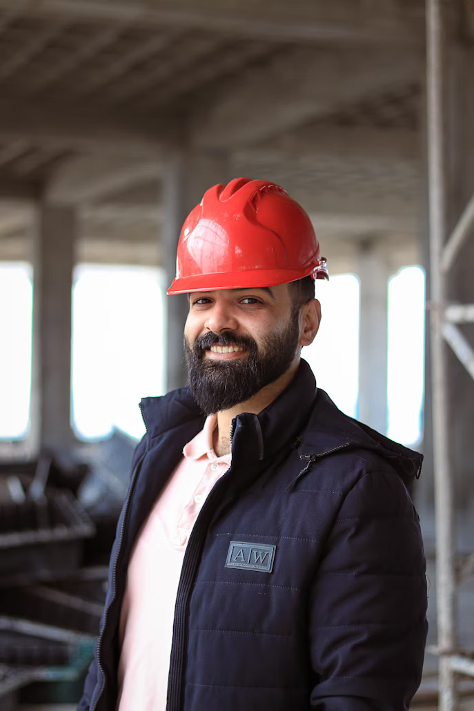
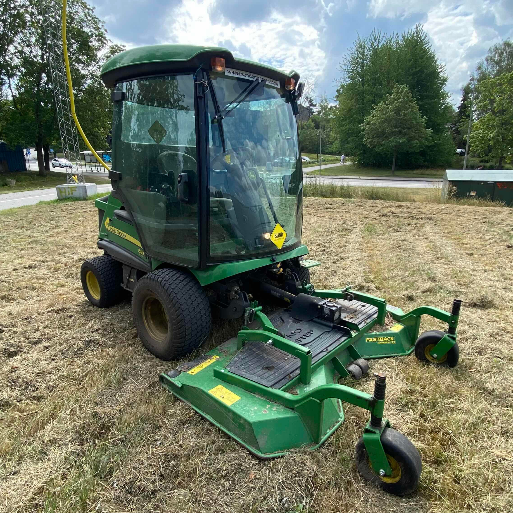
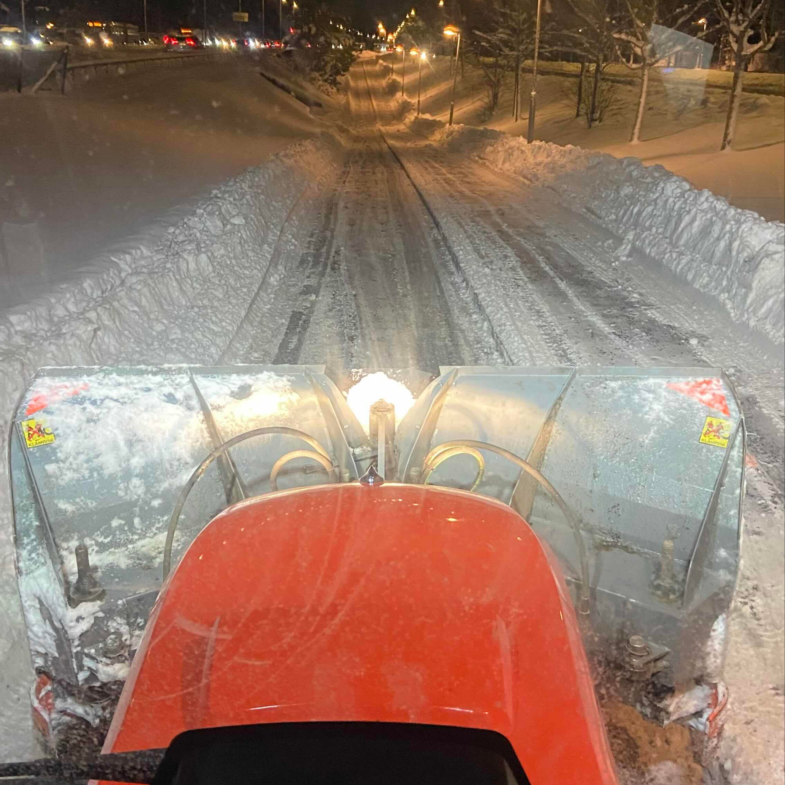
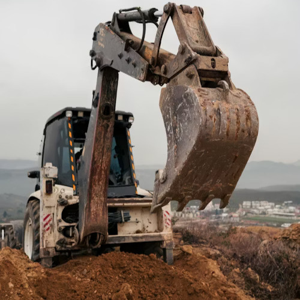

För snart hundra år sedan, 1929, grundade Arne med endast en spade Arnes Grävtjänst. Med den enda tanken av röja dän alla platta marker och gräva hål där det finns plats
har företaget genom åren växt avsevärt. Dessa dagar äger vi inte samma filosofi, då vi även börjat fylla hål,
men grundtanken är detsamma: vi hjälper samhället genom att flytta jord!
Dessa dagar har vi mer än spadar, och de tjänster vi erbjuder har gått långt från enkla verktyg och lek i sandlåda. Vi utnyttjar idag tungt maskineri
för att få diversa arbeten gjorda - vilket inkluderar allt från att gräva, lägga rör, och snöröjning, till att hyra ut våra fordon och verktyg till privatpersoner och företagare.
För att se mer om vad vi erbjuder, kolla gärna in Våra Tjänster. Om du vill hyra ut fordon eller begära våra tjänster kan du nå oss via vår kontaktinformation nede på sidan eller genom vår kundtjänst
Vill du veta mer om våran historia och vilka vi är? Lär dig mer på vår Om Oss sida!
Personen på bilden är vår nuvarande ägare, och är den mest hårt arbetande på plats! Detta är nämnligen Arne-adolf Bergsson, barn-barn-barnet till Arne som först grundade företaget, och någon som
har bidragit stort till vår moderna framkomst och miljö här på Arnes Grävtjänst.



Vi erbjuder tjänster i flera olika områden, och kan hyra ut maskineri till ett antal olika ändamål. Detta är inte begränsat till endast utgrävning, men inkluderar exempelvis verktyg och maskineri för gräsklippning, drenering, pumpning, och mycket mer!

Snöplogning är också en av våra expert-tjänster! Vi arbetar ständigt med kommuner genom vintrarna för att göra alla vägar, parker och områden framkomliga för både fot och fordon! Kontakta oss genom våran kundtjänst för att beställa våra tjänster!

Har du inte den utrustning du behöver? Vi erbjuder stora mängder utrustning i form av fordon, redskap och säkerhetsutrustning! Du kan såklart begära dessa för de lägsta priserna. Detta inkluderar exempelvis hjälmar, grävmaskiner och snöplogar.